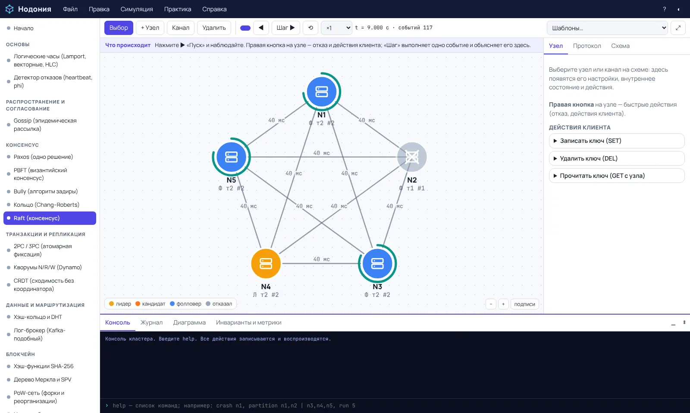

Сломай кластер.
Узнай, как он выжил.
«Нодония» — симулятор распределённых систем и блокчейна. Выбирайте лидера в Raft, ловите дуэль в Paxos, ломайте PBFT двумя предателями, проводите атаку 51% на PoW и запускайте смарт-контракты с газом. Всё в браузере, без сервера, установки и аккаунтов.

Распределённые системы нельзя понять по слайдам
Отказы узлов, потерянные сообщения, раздел сети и разошедшиеся часы — это то, что невозможно «увидеть» в учебнике. Настоящий кластер дорог и не воспроизводится: ошибка случилась один раз и исчезла. В Нодонии время виртуальное и детерминированное — любую историю можно перемотать, повторить и разобрать по шагам.
| Нодония | Реальный кластер (Docker, Kubernetes) | Визуализаторы одного алгоритма | Демо блокчейна | |
|---|---|---|---|---|
| Работает в браузере, без установки | ✓ | ✗ | ✓ | ✓ |
| Консенсус, репликация и блокчейн в одном инструменте | ✓ | зависит от стенда | ✗ один алгоритм | ✗ только блокчейн |
| Можно ломать узлы, каналы, делить сеть | ✓ | нужны инструменты | частично | ✗ |
| Воспроизводимость и шаг назад | ✓ | ✗ | редко | ✗ |
| Проверка свойств безопасности (инварианты) | ✓ | нужны тесты | редко | ✗ |
| Лабораторные, задания и экзамен на русском | ✓ | ✗ | ✗ | ✗ |
| Открытый код, можно развернуть у себя | ✓ | ✓ | по-разному | по-разному |
| Работает на слабых ПК и планшетах | ✓ | ✗ тяжёлый | ✓ | ✓ |
Это не замена реальным системам. Нодония упрощает протоколы ради понимания: идеи, границы применимости и типичные ошибки видны сразу, а промышленные детали (диск, версии протокола, безопасность каналов) оставлены за кадром. Таблица составлена по открытым данным и обобщает типы инструментов; если вы знаете достойную альтернативу, напишите нам.
Лаборатория распределённых систем в одной вкладке
Схемы и сбои
Узлы и каналы с задержкой, джиттером, потерями и дублями. Отказ узла, обрыв канала, раздел сети на группы — одним щелчком или командой.
Детерминированное время
Виртуальные часы и seed: один и тот же сценарий воспроизводится точно. Есть шаг вперёд и назад, перемотка и ссылка «Поделиться».
Диаграмма сообщений
Пространственно-временная диаграмма показывает, кто что кому отправил и когда: потери, задержки, таймеры и ключевые события.
Инварианты
Симулятор сам проверяет свойства безопасности: «один лидер в терме», «исполнено одно и то же». Нарушение подсвечивается и сохраняется.
Консоль и действия клиента
crash n1, partition n1,n2 | n3,n4,n5, do put key=x value=1, run 10 — все действия записываются и воспроизводятся.
Блокчейн изнутри
SHA-256, цепочка блоков с PoW, кошельки на ECDSA secp256k1, дерево Меркла и SPV, виртуальная машина контрактов с газом.
Атаки и экономика
Двойная трата, атака 51%, эгоистичный майнинг, пересчёт сложности при падении хэшрейта, эмиссия и халвинг — с формулами и симуляцией.
Архитектуры сервисов
Монолит, балансировщик, кэш, очередь, каскадные отказы и retry storm. Каталог из 17 паттернов, подбор под требования и калькуляторы.
Всё у вас на устройстве
Нет серверной части и слежки: схемы и результаты хранятся в браузере. Можно работать офлайн или выложить на любой статический хостинг.
От часов Лэмпорта до атаки 51%
Время и отказы
Логические и векторные часы, детектор отказов (таймаут и phi-accrual), CAP и модели согласованности.
Raft, Paxos, PBFT
Выборы, репликация журнала, дуэль пропоузеров, смена вида, византийские узлы, Bully и Ring.
Репликация и транзакции
Кворумы N/R/W, CRDT, 2PC и 3PC, gossip, консистентное хэширование, Chord и Kademlia, Kafka-подобный журнал.
PoW, PoS, контракты
Форки и реорганизации, финальность и слэшинг, кошельки, UTXO и счета, газ, реентерабельность.
Путь от «что такое кворум» до проектирования архитектуры
Лабораторные ведут от простого к сложному: теория на странице, шаги в симуляторе, вопросы для самопроверки.
Основы: время, сбои, обнаружение
Почему нет «единого времени», чем отказ отличается от медленности и почему идеальный детектор невозможен.
Консенсус
Raft, Paxos, PBFT: поймите, зачем нужно большинство, чем отличается n=2f+1 от n=3f+1 и как рушится безопасность при превышении допущений.
Данные и репликация
Кворумы, CRDT, транзакции 2PC/3PC, шардирование, потоковые журналы: где приходится платить согласованностью.
Блокчейн
Хэши, подписи, PoW и PoS, смарт-контракты, атаки и экономика: как открытая сеть договаривается без доверия.
Архитектура
Монолит, кэш, очередь, балансировщик, circuit breaker: что сломается первым и как это проверить расчётом.
Проверка знаний
17 заданий, где симулятор сам проверяет результат, тест из 101 вопроса и экзамен из 25 случайных вопросов.
Одна платформа — для студентов, преподавателей и инженеров
Учись, ломая
Информационная безопасность, системное и сетевое администрирование, программирование: увидьте то, что объясняют на лекции.
Стенд в каждом браузере
Лабораторные с методичкой, задания с автопроверкой, экзамен. Ничего не нужно ставить на классные ПК.
Проверьте идею до кода
Прикиньте, как поведёт себя схема при отказах и перегрузке, посчитайте кворумы и доступность, обсудите дизайн с командой по ссылке.
25 секунд, чтобы увидеть, как это работает
Выборы лидера в Raft, запись, отказ лидера, диаграмма сообщений, раздел сети и сеть PoW с атакующим.
Посмотрите, как это выглядит
Raft: лидер N4 выбран, N2 отказал. Состояние каждого узла — рядом с ним.
Открытый код. Навсегда открытый.
«Нодония» — свободное программное обеспечение под лицензией GNU AGPL‑3.0. Вы можете использовать, изучать, изменять и распространять её — в том числе в колледже и в коммерческих проектах. Единственное условие: если вы улучшаете «Нодонию» и даёте пользоваться ей другим (даже через сайт), вы публикуете свои улучшения на тех же условиях.
$ python3 -m http.server 8080
→ http://localhost:8080
# свой протокол — это один файл:
# ND.registerProtocol({ id, onMessage,
# onTimer, invariants, … })
# см. docs/Техническая_документация.md
Проект делает один преподаватель. С вашей помощью — быстрее.
Нодония была и останется бесплатной. Но домен, хостинг, время на новые протоколы, лабораторные и проверку каждой функции стоят ресурсов. Если проект помог вам или вашим студентам — поддержите его любой суммой.
Способы поддержки появятся здесь совсем скоро.
Нет возможности донатить? Это тоже помощь: поставьте звезду на GitHub, расскажите студентам и коллегам, сообщите об ошибке или предложите идею.
Коротко о главном
Это правда бесплатно?
Да. Нет подписок, рекламы и скрытых платежей. Поддержка проекта — только добровольная.
Нужно ли что-то устанавливать или регистрироваться?
Нет. Откройте страницу симулятора в современном браузере — на ПК, ноутбуке или планшете. Работа и результаты сохраняются в вашем браузере.
Это настоящие реализации Raft, Paxos и PBFT?
Это учебные упрощённые реализации с теми же идеями и свойствами безопасности, но без диска, сжатия журнала и других промышленных деталей. Они хорошо подходят, чтобы понять алгоритм и границы его применимости, но не заменяют проверенные библиотеки.
Можно ли хранить в кошельках реальные деньги?
Нет. Криптография в симуляторе — учебная модель, работающая в браузере. Ключи и «монеты» нужны для понимания принципов и не предназначены для защиты реальных активов.
Можно ли использовать в колледже и на занятиях?
Да, именно для этого проект и создан. Можно открыть на сайте или развернуть у себя: достаточно любого статического веб-сервера. Лицензия AGPL разрешает это бесплатно.
Как работает проверка заданий?
Для каждого задания заданы цели в виде проверок состояния симулятора. Пока вы экспериментируете, галочки отмечаются автоматически; результат сохраняется в браузере.
Как сообщить об ошибке или предложить идею?
Напишите автору любым способом из раздела «Контакты» или заведите issue в репозитории на GitHub.
Нашли ошибку? Есть идея?
Каждое сообщение читает автор проекта. Пожелания студентов и преподавателей определяют, что появится в следующей версии. Предложения о сотрудничестве тоже приветствуются.